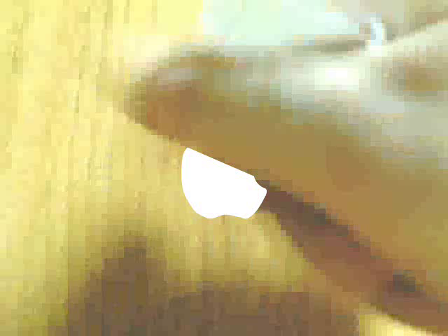

Created the very night after Apple released the MacBook Air, iPod Paper and its sequels have been the most viewed videos I've uploaded to YouTube. I'm not going to argue that number of views correlates with quality because it's YouTube, and we all know how that is… Anyway, I was 11 at the time and armed only with an over-exposing Logitech webcam and a copy of Macromedia Flash as old as I was, so to create what would go on to become my legacy, I started by drawing an iPod on a piece of paper. By the way, feel free to follow along and make one of your very own! There was, like, a rectangle and a smaller rectangle inside for the screen. Then a circle with a smaller circle inside for the clickwheel. Inside the outer circle were the following words and symbols: menu, >>, >||, and <<. Bear in mind, I started at the 12 o'clock position and added each item clockwise. After a few hours with many scattered breaks, I finally had a drawing of an iPod which was then cut out and taped to the side of my mother's computer desk. I recorded a video of me doing things (in layman's terms) on it as if it were a real iPod—although I've never told anybody, the real trick to making this video was in the pretending, for the iPod was not functional. Once I had the video recorded and up to my incredibly high standards, I went through the convoluted process of converting the nice ol' .avi into a compatible .mov on a Windows PC, which was the only file type that Flash 4 could handle. Ironically, the latest version of Flash must have all video files converted to .flv as .mov is no longer compatible! Once I imported the video into Flash, it was up to my keen animation abilities to produce something that nary a soul could tell was fake. The animation process basically consisted of me scrubbing through frames, watching my finger, and making minor changes once my finger reached certain places—suffice it to say I wasn't exactly making Avatar. After drawing a few iterations of fake screens, I could export the video, import it into Windows Movie Maker (said no good filmmaker ever!), add in the titles, music, and ending seque—oh, bloody hell, I forgot about the ending. The ending was simply a recording of me crumpling up the iPod. There. Also, I originally wanted it to look like the Apple logo was behind the iPod the whole time after removing and crumpling it, but I soon realized that would take way too much time roto-masking it behind my hand. Ultimately, I settled for having the logo meekly appear from behind my hand at random as shown below.

The animation of the folding Apple logo was very tedious, and I ended up forgetting what the logo would look like flipped over. That's why it just turns into a triangle and exits screen-left. Anyway, the success that the original enjoyed on the Tube (I say Tube instead of YouTube because I want to project the image of a very cool person) inspired me to make two sequels: iPod paper 2 and iPod LiquidPaper, BUT there was a never-uploaded sequel that preceded iP2 (I say iP2 instead of iPod paper 2 because…) which has never been seen by anybody else. Until now.
Yeah, I know, what the actual hell? Why was the framerate even lower than the original's? Why did it get slower whenever the scene became more overexposed? What was up with the finger? To answer all three questions at once, I was extremely out of my depth. I should've chroma-keyed out the "screen" on the iPod (after coloring it green or blue) and inserted the animation in a layer behind the video. Sadly, I still didn't even know how to do that when I got to making the most recent video in 2011; when it gets to the touch-based portion of the video, I manually traced around my finger for each bloody frame. I will say this, however, the effect came across much more competently than before.
At one point, when I had a website, I devoted a page of it to a mock Apple site centered around the iPod paper. Anyway, as this rambling comes to a close and I take my leave as narrator, I leave you with the very flash animation that served as mock site.